17 Foundation Models: The Cornerstones of Modern AI
17.1 Overview
Foundation models (FM) are deep learning models trained on massive raw unlabelled datasets usually through self-supervised learning. FMs enable today’s data scientists to use them as the base and fine-tune using domain specific data to obtain models that can handle a wide range of tasks (language, vision, reasoning etc.). In this chapter, we provide an introduction to FMs, its history, evolution, and go through its key features and categories, and a few examples. We also briefly discuss how foundation models work. This chapter will be a precursor to the hands-on session that follows on the same topic.
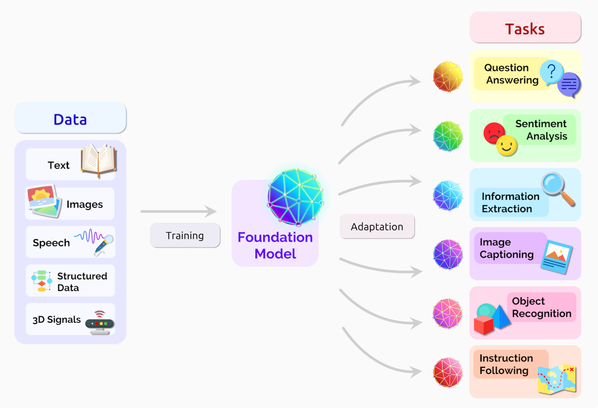
In this session, we take a closer look at what constitutes a foundation model, a few examples, and some basic principles around how it works.
17.2 Outline
- Overview of foundation models
- Types of foundation models
- Architecture
- Segment Anything Model (SAM 2)
- Retrieval Augmented Generation
17.3 Introduction
17.3.1 Traditional ML vs Deep Learning vs Foundation Models
Traditional machine learning involves algorithms that learn patterns from structured data. Techniques like decision trees, support vector machines, and linear regression fall under this category. These methods often require feature engineering, where domain knowledge is used to select and transform input features to improve model performance. Traditional machine learning excels in scenarios with limited data and interpretable results.
Deep learning is a subset of machine learning that employs neural networks with multiple layers (hence “deep”). These models automatically learn features from raw data, making them particularly powerful for complex tasks like image and speech recognition. Deep learning excels with large datasets and can capture intricate patterns but often requires significant computational resources and can be harder to interpret compared to traditional methods.
Foundation models, such as GPT and BERT, represent a new paradigm in AI. These large-scale models are pre-trained on vast amounts of data and can be fine-tuned for specific tasks with minimal additional training. Earlier neural networks were narrowly tuned for specific tasks. With a little fine-tuning, foundation models can handle jobs from translating text to analyzing medical images. Foundation models generally learn from unlabeled datasets, saving the time and expense of manually describing each item in massive collections. Foundation models leverage transfer learning, allowing them to generalize across different tasks more effectively than traditional machine learning and deep learning models.
17.4 Foundation Models
Foundation models, introduced in 2021 by Standford Researchers [1], are characterized by their enormous neural networks trained on vast datasets through self-supervised learning. These models serves as a “foundation” on which many task-specific models can be built by adaptation. Their capabilities improves with more data, requiring substantial computational power for training. These models can be adapted to various downstream tasks and are designed for reuse, leveraging transfer learning to enhance performance across different applications.
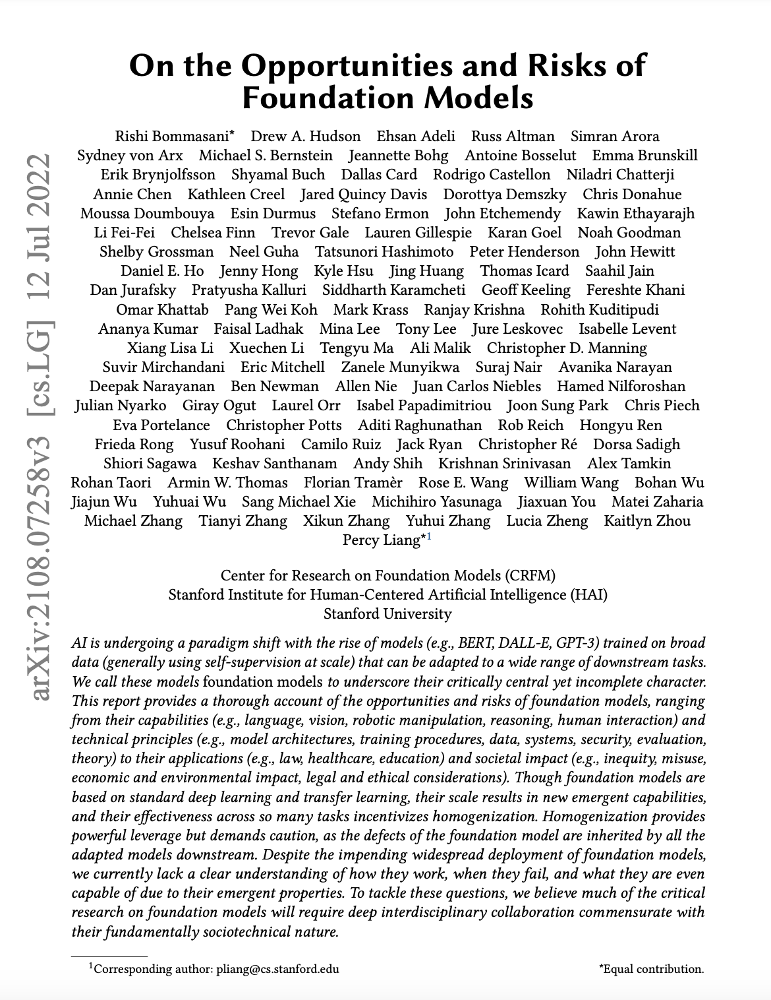
With the start of availability of big data for training, evidence showed that performance improves with size. The field came to the conclusion that scale matters, and with the right model architecture, intelligence comes with large-scale data.
Here’s a few examples of foundation models and their parameter count:
- CLIP [2] - 63 million parameters
- BERT [3] - 345 million parameters
- GPT-3 [3] - 175 billion parameters
- Wikipedia consists of only 3% of its training data
- GPT-4 [4] - 1.8 trillion parameters
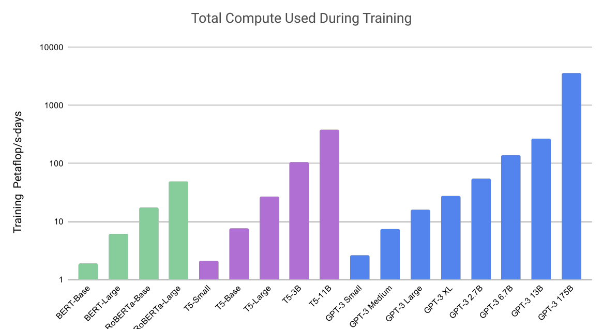
17.5 Types of foundation models
Foundation models can be classified on the basis of its modality and its underlying architecture.
| Criteria: Modality | Criteria: Architecture |
|---|---|
| Language Models | Transformer Models |
| Vision Models | Generative Models |
| Multimodal Models | Diffusion Models |
17.5.1 Types of foundation models (Modality)
17.5.1.1 Language models
Language models are trained for natural language processing tasks. The primary training objective for LLMs is often next-token prediction, where the model learns to predict the next word in a sequence given the preceding context. This is achieved through a vast amount of text data, enabling the model to learn grammar, facts, and even some reasoning patterns. LLMs tend to be good at various NLP related tasks, like translation, conversational AI, sentiment analysis, content summarization etc., to name a few.
Here’s some examples of language models:
- GPT-3
- GPT-4
- Llama 3.2 [5]
17.5.1.2 Vision models
Vision models are trained for computer vision tasks. The primary training objective of vision models is to effectively learn representations that enable accurate predictions or useful transformations based on visual data. Vision models tend to be good at tasks like object detection, segmentation, facial recognition, etc.
Here’s some examples of vision models:
- GPT-4-turbo
- SAM [6]
- CLIP [5]
- Swin-transformer [7]
17.5.1.3 Multimodal models
Multimodal models are designed to process and understand multiple types of data modalities, such as text, images, audio, and more. These models can handle various data types simultaneously, allowing them to learn relationships and correlations between different forms of information (e.g., associating text descriptions with images). By training on datasets that include multiple modalities, multimodal foundation models learn to create a unified representation space where different types of data can be compared and processed together. This often involves shared architectures for encoding different modalities. These models can often perform well on tasks they haven’t been specifically trained on, thanks to their ability to leverage learned relationships across modalities. This makes them versatile for applications in various domains. Many multimodal models, like CLIP and DALL-E, use contrastive learning to improve their understanding of how different modalities relate. They aim to maximize similarity between paired data (e.g., an image and its caption) while minimizing similarity between unrelated pairs. These models can often perform well on tasks they haven’t been specifically trained on, thanks to their ability to leverage learned relationships across modalities. This makes them versatile for applications in various domains. Multimodal foundation models are used in diverse areas such as image and video captioning, visual question answering, cross-modal retrieval, and interactive AI systems that require understanding and generating multiple types of content.
Here’s some examples of multimodal foundation models:
17.5.2 Types of foundation models (Architecture)
17.5.2.1 Transformer models
Introduced in 2017 by the paper “Attention is all you need” [11], the transformer architecture revolutionized NLP by enabling models to efficiently capture complex relationships in data without the limitations of recurrence. This architecture is known for its ability to handle sequential data efficiently. Its parallel processing capabilities and scalability have made it a foundational model for many state-of-the-art systems in various domains, including image processing and speech recognition. Checkout “The Illustrated Transformer” (blog post)[https://jalammar.github.io/illustrated-transformer/] for a detailed overview of the transformer architecture.
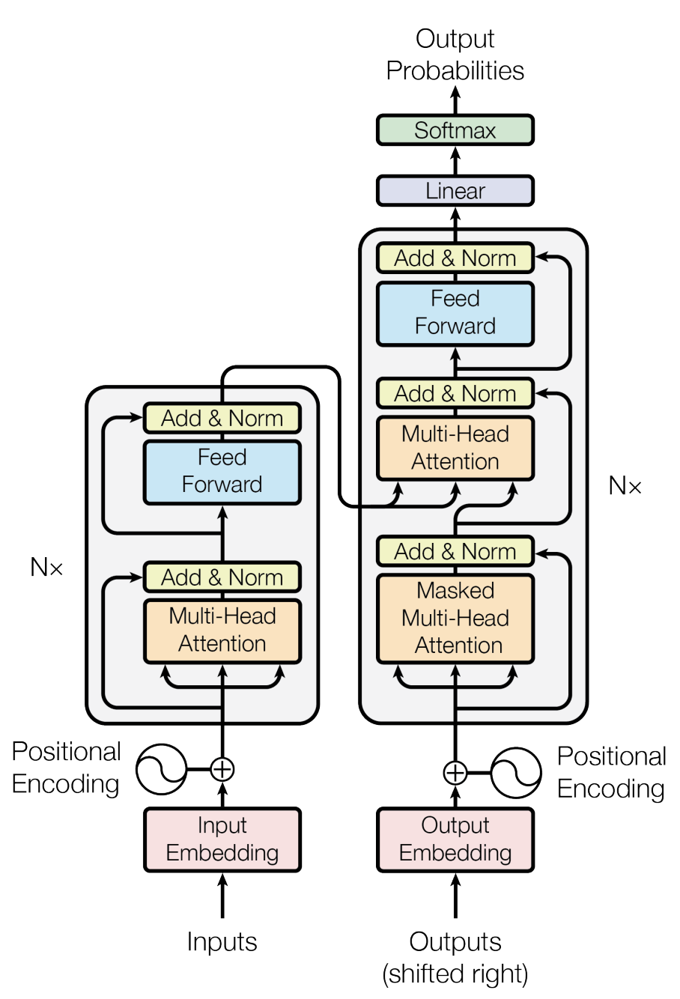
17.5.2.1.1 Attention Mechanism
Attention is, to some extent, motivated by how we pay visual attention to different regions of an image or correlate words in one sentence [12]. we can explain the relationship between words in one sentence or close context. When we see “eating”, we expect to encounter a food word very soon. The color term describes the food, but probably not so much with “eating” directly.
Check out Lilian Weng’s blog post [12] on detailed overview of attention mechanism.
17.5.2.1.2 Key components of transformer architecture:
- Self-Attention Mechanism:
- Purpose: Allows the model to weigh the importance of different words in a sequence relative to each other, capturing dependencies regardless of their distance.
- Function: For each input token, self-attention computes a set of attention scores that determine how much focus to place on other tokens. This is done using three vectors: Query (Q), Key (K), and Value (V).
- Calculation: The attention score is computed as a dot product of Q and K, followed by a softmax operation to normalize it. The output is a weighted sum of the V vectors based on these scores.
In the example below, the self-attention mechanism enables us to learn the correlation between the current words and the previous part of the sentence.
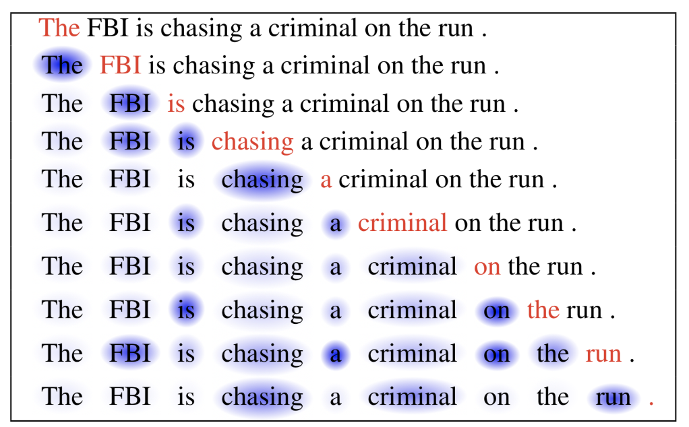
- Positional Encoding:
- Purpose: Since transformers do not have a built-in notion of sequential order, positional encodings are added to the input embeddings to provide information about the position of tokens in the sequence.
- Implementation: Positional encodings use sine and cosine functions of different frequencies to generate unique values for each position.
- Multi-Head Attention:
- Function: Instead of having a single set of attention weights, the transformer employs multiple attention heads, each learning different aspects of the relationships between tokens.
- Process: The input is split into multiple sub-vectors, and self-attention is applied in parallel. The outputs of each head are concatenated and linearly transformed.
- Feed-Forward Networks:
- Purpose: After the multi-head attention step, each token’s representation is passed through a feed-forward neural network, which applies transformations independently to each position.
- Structure: Typically consists of two linear transformations with a ReLU activation in between.
- Layer Normalization and Residual Connections:
- Layer Normalization: Applied to stabilize and speed up training by normalizing the outputs of each layer.
- Residual Connections: Shortcuts are added around sub-layers (e.g., attention and feed-forward) to facilitate the flow of gradients during training, helping to mitigate the vanishing gradient problem.
- Stacking Layers:
- Transformers consist of multiple layers of multi-head attention and feed-forward networks, allowing for deep representations of the input data.
- Output Layer:
- For tasks like language modeling or translation, the final layer typically uses a linear transformation followed by a softmax activation to predict the next token or class.
There are more than 50 major transformer models [14]. The transformer architecture is versatile and can be configured in different ways. The transformer architecture can support both auto-regressive and non-auto-regressive configurations depending on how the self-attention mechanism is applied and how the model is trained.
Auto-Regressive Models: In an auto-regressive setup, like the original GPT (Generative Pre-trained Transformer), the model generates text one token at a time. During training, it predicts the next token in a sequence based on the previously generated tokens, conditioning on all prior context. This means that at each step, the model only attends to the tokens that come before the current position, ensuring that future tokens do not influence the prediction.
Non-Auto-Regressive Models: Other models, like BERT (Bidirectional Encoder Representations from Transformers) [3], are designed to be non-auto-regressive. BERT processes the entire input sequence simultaneously and is trained using masked language modeling, where some tokens in the input are masked, and the model learns to predict them based on the surrounding context.
GPT-3 and CLIP models utilize transformers as the underlying architecture.
17.5.2.2 Generative-Adversarial models
Introduced in 2014, Generative Adversarial Networks (GANs) [15] involves two neural networks (generator-discriminator network pair) contest with each other in the form of a zero-sum game, where one agent’s gain is another agent’s loss. Given a training set, this technique learns to generate new data with the same statistics as the training set. For example, a GAN trained on photographs can generate new photographs that look at least superficially authentic to human observers, having many realistic characteristics.
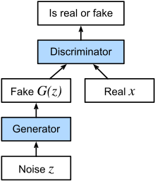
In a GAN,
- the generator learns to generate plausible data. The generated instances become negative training examples for the discriminator.
- The discriminator learns to distinguish the generator’s fake data from real data. The discriminator penalizes the generator for producing implausible results.
When training begins, the generator produces obviously fake data, and the discriminator quickly learns to tell that it’s fake:
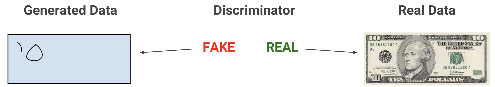
As training progresses, the generator gets closer to producing output that can fool the discriminator:
Finally, if generator training goes well, the discriminator gets worse at telling the difference between real and fake. It starts to classify fake data as real, and its accuracy decreases. The training procedure for generator is to maximise the probability of discriminator making a mistake.
Here’s a picture of the whole system:
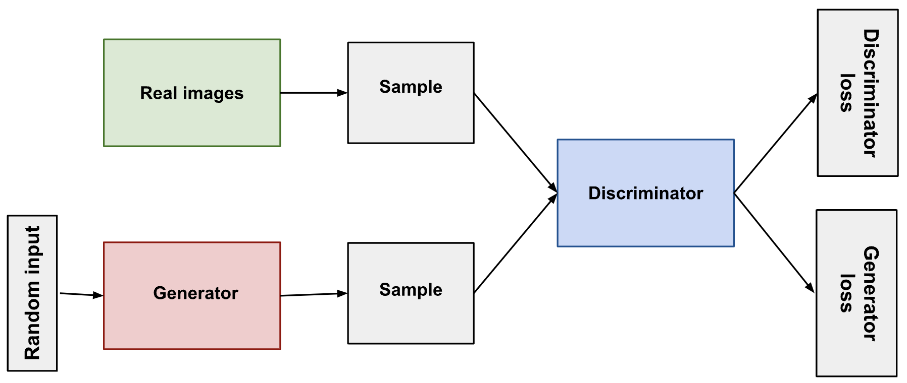
A disadvantage of GAN is potentially unstable training and less diversity in generation due to their adversarial training nature. StyleGAN [16] and BigGAN [17] are example of models that utilize GAN as the underlying architecture.
17.5.2.3 Diffusion models
Diffusion models, introduced in 2020 [18], are inspired by non-equilibrium thermodynamics. They define a Markov chain of diffusion steps to slowly add random noise to data and then learn to reverse the diffusion process to construct desired data samples from the noise [19].
17.5.2.3.1 Key components of diffusion models
- Forward Diffusion Process:
- The forward process gradually adds Gaussian noise to the training data over a series of time steps. This process effectively transforms the original data into pure noise.
- Reverse Diffusion Process:
- The reverse process aims to denoise the noisy data back into a sample from the data distribution. This process is learned through a neural network.
- At each time step, the model predicts the mean and variance of the distribution of the previous step conditioned on the current noisy data. The network outputs parameters that help in gradually removing the noise.
- Training Objective:
- The model is trained to minimize the difference between the predicted clean data and the actual data at each step of the diffusion process. This is often done using a mean squared error (MSE) loss between the predicted noise and the actual noise added during the forward process.
- Sampling:
- To generate new samples, the process starts with pure noise and applies the learned reverse diffusion process iteratively. Over multiple time steps, the model denoises the input until it resembles a sample from the training distribution.
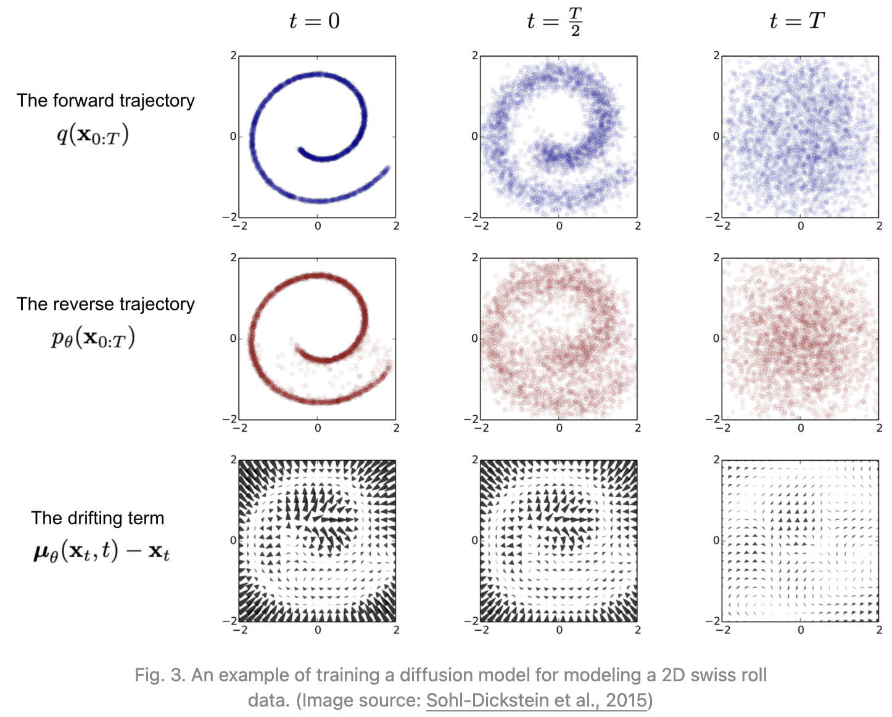
Diffusion models can generate high-resolution and diverse images, often outperforming GANs in certain tasks. They are generally more stable to train compared to GANs, as they do not rely on adversarial training dynamics.
Stable-diffusion [20], DALL-E [8], Sora are some of the most common models utilizing diffusion architecture.
17.5.3 Foundation Models - Applications
Having explored the foundational principles and capabilities of foundation models, we can now delve into specific applications that leverage their power. Two prominent techniques that build upon the capabilities of these models are Segment Anything Model (SAM) and Retrieval-Augmented Generation (RAG).
17.6 Segment Anything Model
Segment Anything Model (SAM) is a foundation model for the Promptable Visual Segmentation (PVS) task. PVS inspired from prompt engineering in NLP that user prompts can be a powerful tool for pre-training foundation models and downstream tasks. It is developed by the Fundamental AI Research (FAIR) team at Meta [6]. SAM is a simple and flexible framework that can segment any object in an image by providing a combination of one or more prompts - namely points, bounding boxes, or other segmentation masks. SAM is based on the transformer architecture and is trained on a large-scale dataset of images and their corresponding segmentation masks.
The latest version of SAM, SAM 2, can segment images and videos and uses a unified architecture for both tasks [21]. It is designed to handle complex scenes with multiple objects and can generate high-quality segmentations with minimal user input. The model can be used for various applications, including image editing, object detection, and video analysis.
Since large-scale datasets for segmentation are unavailable, the research team created a data engine to generate segmentation masks, which were then manually annotated when developing SAM. The model was trained on diverse images to improve its generalization capabilities. This model-in-the-loop self-supervised training created two datasets: SA-1B containing 1B segmentation masks from about 11M privacy preserving images and SA-V dataset containing 642.6K masklets (spatio-temporal segmentation masks) from 50.9K videos.
17.7 Retrieval-Augmented Generation (RAG)
Large pre-trained Language Models (LLMs) have revolutionized natural language processing, but they come with inherent limitations that necessitate the development of techniques like Retrieval-Augmented Generation (RAG). This chapter explores the motivations behind RAG by examining the constraints of traditional LLMs.
17.7.1 Limitations of Large Language Models
- Lack of Specific Knowledge Access
LLMs, despite their vast training data, cannot access specific knowledge bases or datasets that weren’t part of their original training. This limitation becomes apparent when dealing with specialized domains or recent information.
- Absence of User-Specific Data
LLM has not seen “your” data - the unique, often proprietary information that organizations and individuals possess. This gap can lead to generic responses that lack the nuance and specificity required in many real-world applications.
- Domain-Specific Knowledge Challenges
When specific domain knowledge is required, the traditional approach has been to fine-tune the LLM. However, this process can be resource-intensive and may not always yield optimal results, especially for niche or rapidly evolving fields.
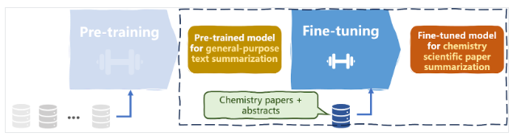
- Lack of Source Attribution
LLMs generate responses based on patterns learned during training, but they don’t provide sources for their information. This lack of attribution can be problematic in contexts where verifiability and credibility are crucial.
- Hallucinations
One of the most significant issues with LLMs is their tendency to produce “hallucinations” - plausible-sounding but factually incorrect or nonsensical information. This phenomenon can undermine the reliability of the model’s outputs. See Lilweng’s blog post [22] on hallucinations for detailed information.
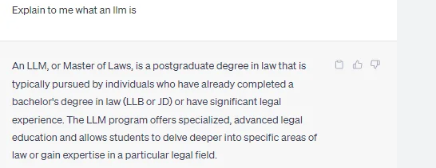
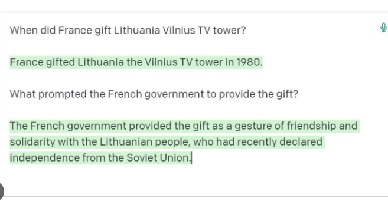
- Outdated Information
The knowledge of an LLM is static, frozen at the time of its training. This leads to the problem of outdated information, where the model cannot account for recent events, discoveries, or changes in the world.
Retrieval-Augmented Generation emerges as a solution to these limitations. By combining the generative capabilities of LLMs with the ability to retrieve and incorporate external, up-to-date information, RAG offers a path to more accurate, current, and verifiable AI-generated content. In the following sections, we will explore how RAG works, its advantages, and its potential applications in various domains.
17.7.2 Introduction to RAG
Introduced in 2020 [23], RAG framework can be thought of as combining two techniques -
- Generation
- Done by LLMs.
- LLM models used are typically tuned for question-answering
- LLM responds to a user query.
- Retrieval-Augmented
- Use an external database to store specific knowledge
- Retrieve the required information from the provided knowledge base
- Provide this retrieved information to the LLMs as context to answer user question.
Let’s now compare the traditional LLM and RAG approaches
17.7.2.1 Traditional LLM approach
- User Input: The process begins with the user submitting a question.
- Prompt Engineering: The user’s question is combined with a pre-defined prompt.
- LLM Processing: The combined prompt and question are fed into the LLM.
- Response Generation: The LLM generates and returns a response based on its training.
17.7.2.2 RAG approach
- User Input: As before, the user submits a question.
- Knowledge Base Query: The question is used to query a knowledge base.
- Document Retrieval: Relevant documents are retrieved from the knowledge base.
- Prompt Construction: A prompt is constructed using:
- The original question
- Retrieved relevant documents
- Any additional context or instructions
- LLM Processing: The comprehensive prompt is fed into the LLM.
- Response Generation: The LLM generates a response based on both its pre-trained knowledge and the provided context.
| Without RAG | With RAG |
|---|---|
| No ability to access a specific knowledge/domain | Point to a knowledge base |
| No sources | Sources cited in LLM response |
| Hallucinations | LLM response is grounded by relevant information from knowledge base |
| Out-of-date information | Update the knowledge base with new information |
17.7.3 RAG - Retrieval-Augmented Generation
We will focus on the “retrieval” part of RAG for this section.
17.7.3.1 Knowledge database
In the age of burgeoning data complexity and high-dimensional information, traditional databases often fall short when it comes to efficiently handling and extracting meaning from intricate datasets. Enter vector databases, a technological innovation that has emerged as a solution to the challenges posed by the ever-expanding landscape of data. (Source: beginner’s blog post on vector DB)
17.7.3.1.1 Vector database
Vector databases have gained significant importance in various fields due to their unique ability to efficiently store, index, and search high-dimensional data points, often referred to as vectors. These databases are designed to handle data where each entry is represented as a vector in a multi-dimensional space. The vectors can represent a wide range of information, such as numerical features, embeddings from text or images, and even complex data like molecular structures.
At the heart of vector databases lies the concept of vector embeddings. These are mathematical representations of data points in a high-dimensional space. In the context of natural language processing:
- Word Embeddings: Individual words are represented as real-valued vectors in a multi-dimensional space.
- Semantic Capture: These embeddings capture the semantic meaning and relationships of the text.
- Similarity Principle: Words with similar meanings tend to have similar vector representations.
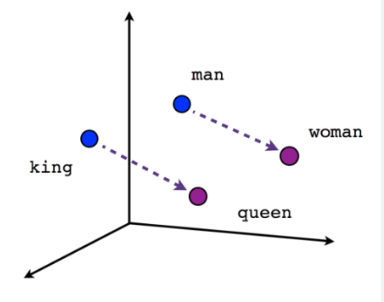
17.7.3.1.1.1 How vector databases work
Let’s start with a simple example of dealing with an LLM such as ChatGPT. The model has large volumes of data with a lot of content, and they provide us with the ChatGPT application.
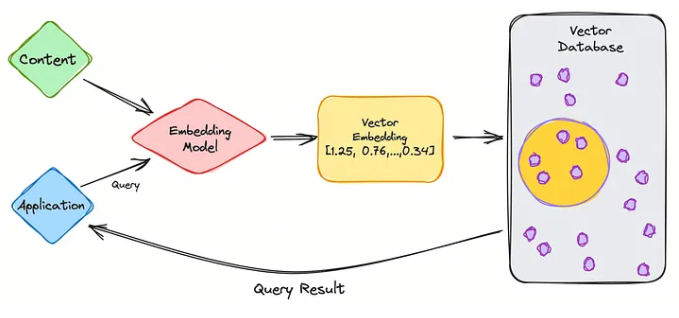
So let’s go through the steps.
- As the user, you will input your query into the application.
- Your query is then inserted into the embedding model which creates vector embeddings based on the content we want to index.
- The vector embedding then moves into the vector database, regarding the content that the embedding was made from.
- The vector database produces an output and sends it back to the user as a query result.
When the user continues to make queries, it will go through the same embedding model to create embeddings to query that database for similar vector embeddings. The similarities between the vector embeddings are based on the original content, in which the embedding was created.
Now lets see how it works in the vector database.

The three main stages that a vector database query goes through are:
- Indexing
As explained in the example above, once the vector embedding moves into the vector database, it then uses a variety of algorithms to map the vector embedding to data structures for faster searching.
- Querying
Once it has gone through its search, the vector database compares the queried vector to indexed vectors, applying the similarity metric to find the nearest neighbor.
- Post Processing
Depending on the vector database you use, the vector database will post-process the final nearest neighbor to produce a final output to the query. As well as possibly re-ranking the nearest neighbors for future reference.
17.7.4 RAG - Retrieval-Augmented Generation
We will focus on the “generation” part of RAG for this section. Here most of the heavy-lifting is done by the LLMs. Let’s see how best to communicate/prompt these LLM models for RAG.
17.7.4.1 Prompting
Prompting is a crucial technique in effectively communicating with Large Language Models (LLMs) to achieve desired outcomes without modifying the underlying model. As LLMs become more sophisticated, the art of crafting effective prompts has emerged as a key skill in natural language processing and AI applications. Checkout LilianWeng blog post [24], medium blog post on prompt engineering.
Prompting is often an iterative process. It typically requires multiple trial-and-error attempts to achieve the desired effect. Each iteration can provide insights into how the model interprets and responds to different input structures.
17.7.4.1.1 Key Elements of Effective Prompting
- Defining a Persona
Assigning the LLM a specific role or behavior can significantly influence its responses. By giving it a defined persona, the model will attempt to respond in a manner that aligns with that role. This can improve the quality and relevance of its answers.
Example: “You are a helpful research assistant”
This prompt frames the model’s responses to be in line with the behavior expected of a research assistant, such as providing accurate information and being resourceful.
- Setting Guardrails
Guardrails provide boundaries or conditions within which the model should operate. This is particularly useful to avoid misleading or incorrect information. You can ask the model to refrain from answering if it’s unsure of the response.
Example: “If you don’t know the final answer, just say ‘I don’t know’.”
This instructs the LLM to admit uncertainty instead of generating a potentially incorrect answer, thereby increasing reliability.
- Providing Clear Instructions
Giving the LLM specific actions to perform before generating responses ensures that it processes the necessary information correctly. This is important when dealing with tasks like reviewing files or using external data.
Example: “Read the data file before answering any questions.”
This directs the LLM to review relevant materials, improving the quality of the subsequent answers.
- Specifying Response Formats
You can enhance the usefulness of responses by specifying the desired output format. By doing this, you ensure the model delivers information in a form that aligns with your needs.
Example: “Respond using markdowns.”
This ensures the LLM outputs text in Markdown format, which can be helpful for structured documents or technical writing.
17.7.5 RAG System
Let’s bring it all together
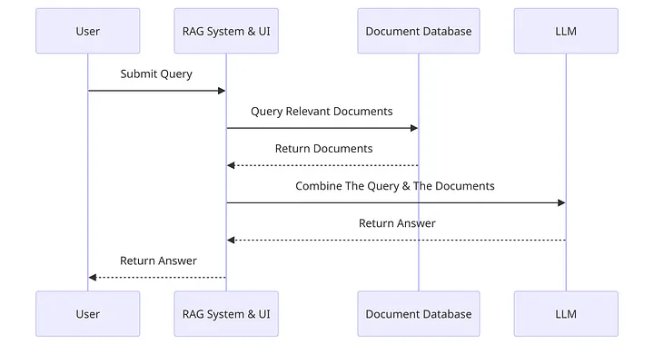
- User Submits Query: The user inputs a query into the system. This is the initial step where the user’s request is captured.
- RAG System Query Relevant Documents: The RAG system processes the user’s query and searches for relevant documents.
- Document Database Returns Documents: The document database receives the request for relevant documents and returns the documents it finds to the RAG system.
- Combine The Query & The Documents: The RAG system takes the documents provided by the document database and combines them with the original query.
- LLM Returns Answer: The combined query and documents are sent to a Large Language Model (LLM), which generates an answer based on the information provided.
- RAG System Return Answer to User: Finally, the answer generated by the LLM is sent back through the RAG system.